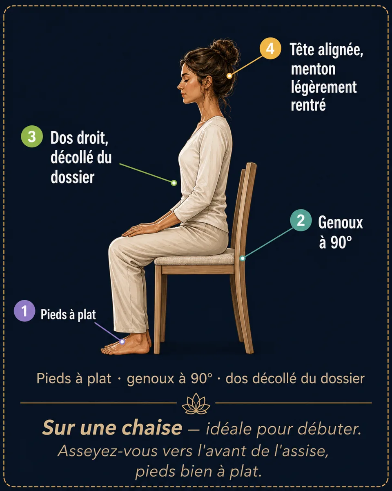
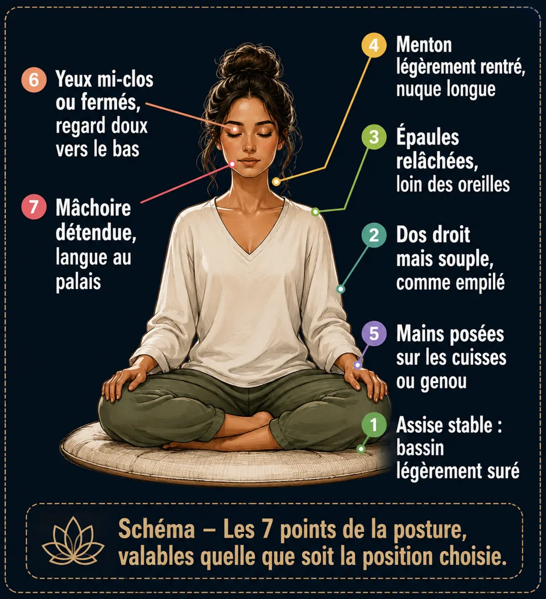
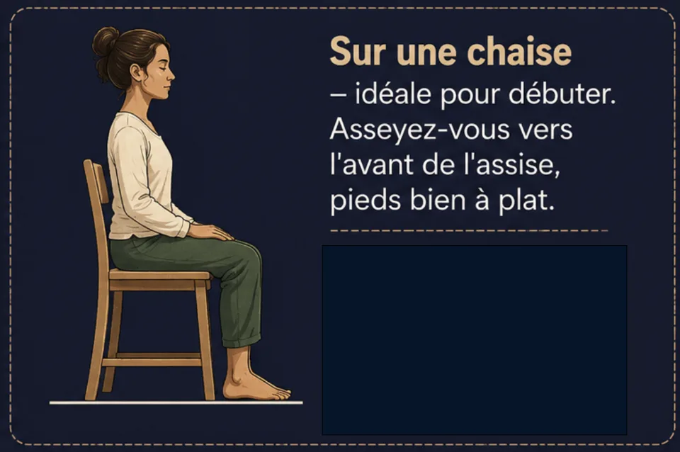
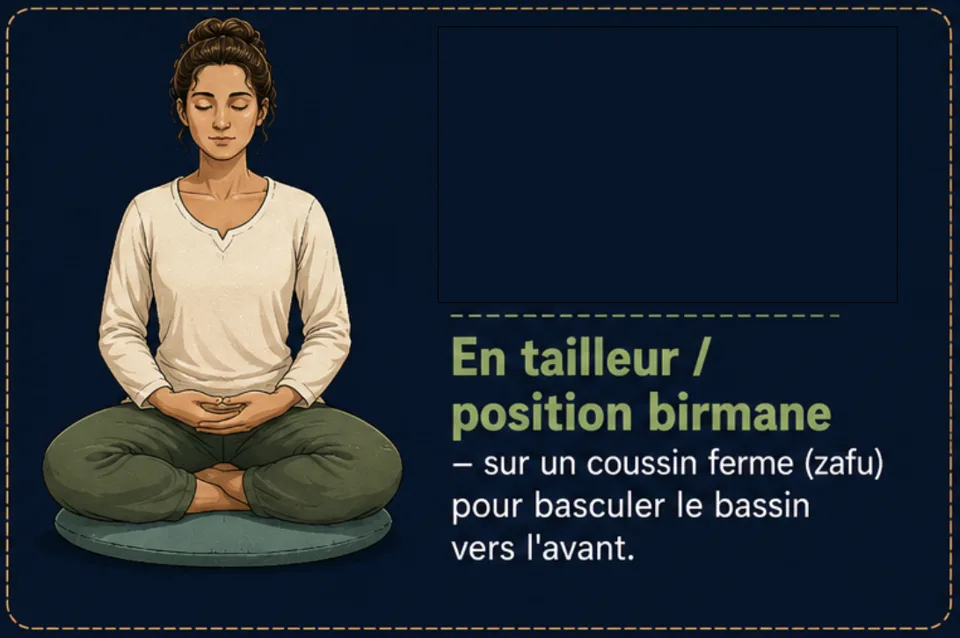

La posture de méditation : 4 positions, 7 points
Chaise, tailleur, seiza ou allongé : les 4 positions de méditation en schémas, et les 7 points d’une posture digne et détendue.
La posture de méditation n'exige ni souplesse ni lotus : sur une chaise, en tailleur, à genoux ou allongé, l'essentiel tient en sept points simples. Voici comment t'installer pour méditer confortablement, sans douleur, dès ta première séance guidée.
La posture
Le principe : « digne et détendu »
Une bonne posture de méditation tient en une formule : le dos se redresse, le reste se relâche. Trop avachi, l'esprit s'endort ; trop rigide, le corps se crispe. Imaginez un fil qui tire doucement le sommet de votre crâne vers le ciel, pendant que vos épaules, votre ventre et votre mâchoire fondent vers le sol.

Choisir sa position : 4 options, aucune hiérarchie
La meilleure position est celle que vous pouvez tenir 10 à 20 minutes sans douleur. Pour un novice, la chaise est un excellent point de départ.




Questions fréquentes
Faut-il méditer en lotus ?
Non. Le lotus n'a rien d'obligatoire : une chaise donne exactement la même qualité de méditation. Le seul critère est de tenir la position sans douleur pendant toute la séance, dos droit et corps relâché.
Peut-on méditer allongé ?
Oui — surtout pour le scan corporel, la relaxation profonde et la méditation pour dormir. Le risque est de s'endormir : si ce n'est pas le but, garde un avant-bras levé ou choisis une position assise.
Que faire si j'ai mal au dos pendant la méditation ?
Commence sur une chaise, pieds bien à plat, assis vers l'avant de l'assise pour laisser la colonne se tenir seule. Si une douleur vive apparaît, change de position sans hésiter : une bonne posture de méditation reste confortable.
Envie de pratiquer plutôt que de lire ?
Tout ce que décrit cet article se pratique dans Awakening Minds, application de méditation gratuite : 195 méditations guidées en français — sommeil, respiration guidée, mondes immersifs — sans abonnement, sans publicité, sans compte, et tout fonctionne hors ligne.
✦ Découvrir l'application gratuite